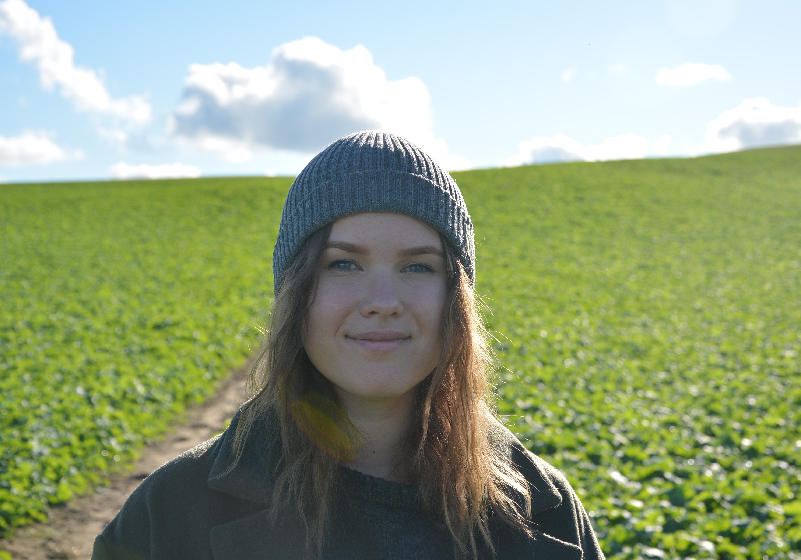

A designer and developer born in the south parts of Norrland, now living in Gothenburg. Addicted to coffee and code. When I’m not at the computer you can find me in the woods.
I’ve always been creative, but not long ago I started getting interested in developing for the web. I found that I could use my previous experience in graphic design to create websites that were both user-friendly and visually pleasing. While my interest in designing for print still stands, my focus now lies in programming. I like the difficulties that comes with trying to solve problems, and achieve a certain result.
Education
2020 – 2022
expand_more
Medieinstitutet
A two-year Higher Vocational Education (HVE) in front end development. The education places great focus on practical knowledge and also has two longer periods of internship. During this program we learn responsive webdevelopment using CSS, HTML, JavaScript among other things.
2017 – 2020
expand_more
Högskolan för design och konsthantverk
A broad design education with a strong focus on project work, formulated by the student to fit their area of interest. During my education, I switched from focusing on printed material to exploring digital methods and tools. It was during this time that I became interested in web design and web programming.
2016 – 2017
expand_more
Hellidens folkhögskola
A one year long course focusing on graphic design. During the education I learned the basics of typography, layout and visual communication. I also learned to use Adobe tools such as Illustrator, InDesign and Photoshop.
Work experience
2018, 2019
expand_more
Tempo, Åmotsbruk
For two summers I worked as a cashier at the Tempo grocery store in Åmot. My duties included handling Svenska Spel, Systembolaget orders and fishing licenses. Good customer service and efficiency were of great importance.
2017
expand_more
Wij Trädgårdar Hotel and Restaurant, Ockelbo
Wij Trädgårdar is a large business with a focus on farming and crafts that attracts both international and local visitors. I worked as a cleaner at the hotel, and if necessary helped out as a waitress in the restaurant.
Other
2018 – 2019
expand_more
Konstkåren, HDK section
Elected as chairperson of HDK's student association. Tasks included handling student matters, representing student interests at various meetings and collaborating with other institutions and their sections.